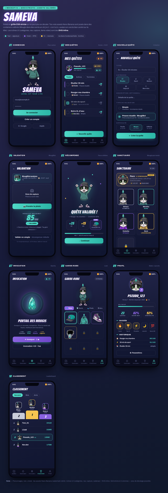

Sameva transforme les habitudes du quotidien en quêtes RPG, validées par une IA de reconnaissance visuelle. Cette page présente la nouvelle direction artistique (univers street-art, mascotte Paco) et les écrans produit issus de la dernière itération de conception.
L'utilisateur crée ses propres quêtes (étudier, ranger, faire du sport…) et gagne de l'XP, de l'or et du loot en les accomplissant. Progression RPG, niveaux et série de jours consécutifs.
Pour les quêtes à preuve visuelle, une photo est analysée par une IA de vision (MougiBot) qui attribue un score sur 100. Au-delà du seuil, la récompense est pleine.
Principe produit non négociable : si l'IA refuse, l'utilisateur peut toujours valider manuellement (récompense réduite). L'app n'enferme jamais quelqu'un dans un échec.
Un sanctuaire de companions (les « Mougis »), un système d'invocation, une garde-robe d'objets streetwear et un classement entre joueurs nourrissent la rétention.
La nouvelle DA s'articule autour de Paco, un chat tuxedo qui sert de mascotte, d'avatar joueur et d'identité visuelle. Style cartoon-mascotte assumé, univers urbain, et une déclinaison « bot » de Paco pour l'assistant IA. La palette repose sur un fond indigo, un teal signature (le cristal) et un violet électrique.
Planche complète de la dernière itération de conception : le parcours principal (connexion → quêtes → création → validation → récompense) et les écrans de méta-jeu (sanctuaire, invocation, garde-robe, profil, classement).

Splash avec Paco et le wordmark de la marque.
Accueil : HUD RPG (niveau, XP, or, série) et liste des quêtes.
Création : catégorie, type de validation, difficulté.
MougiBot analyse la preuve photo et rend un score sur 100.
Gain d'XP, d'or et drop d'objet ; progression de niveau.
Collection de companions, classés par rareté.
Système d'invocation avec taux par rareté.
Inventaire d'objets streetwear à équiper.
Statistiques, succès et historique des quêtes.
Podium et rang du joueur parmi les autres.
Maquettes de conception — le rendu final en application peut varier. Illustrations originales réalisées pour le projet.
Flutter 3 / Dart, architecture MVVM en couches, gestion d'état via Provider, stockage local offline-first (Hive).
Supabase : PostgreSQL, authentification, row-level security et Edge Functions pour l'appel à l'IA de vision.
Validation des preuves par modèle de vision via une Edge Function ; CI/CD GitHub Actions, suite de tests et analyse statique.